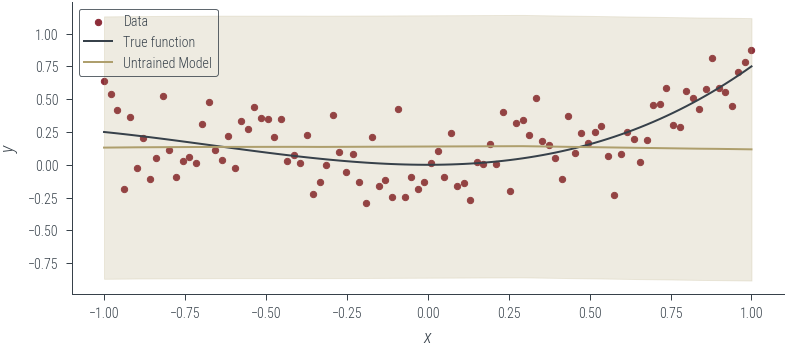

import torch
import numpy as np
import matplotlib.pyplot as plt
import pandas as pd
%matplotlib inline
# Retina display
%config InlineBackend.figure_format = 'retina'
# PyTorch device CUDA0
device = torch.device("cuda:0" if torch.cuda.is_available() else "cpu")Capturing uncertainty in neural nets:
- aleatoric
- homoskedastic (fixed)
- homoskedastic (learnt)
- heteroskedastic
- epistemic uncertainty (Laplace approximation)
- both aleatoric and epistemic uncertainty
Imports
from tueplots import bundles
plt.rcParams.update(bundles.beamer_moml())
# Also add despine to the bundle using rcParams
plt.rcParams["axes.spines.right"] = False
plt.rcParams["axes.spines.top"] = False
# Increase font size to match Beamer template
plt.rcParams["font.size"] = 16
# Make background transparent
plt.rcParams["figure.facecolor"] = "none"Models capturing aleatoric uncertainty
Dataset containing homoskedastic noise
# Generate data
torch.manual_seed(42)
N = 100
x_lin = torch.linspace(-1, 1, N)
f = lambda x: 0.5 * x**2 + 0.25 * x**3
eps = torch.randn(N) * 0.2
y = f(x_lin) + eps
# Move to GPU
x_lin = x_lin.to(device)
y = y.to(device)# Plot data and true function
plt.plot(x_lin.cpu(), y.cpu(), "o", label="data")
plt.plot(x_lin.cpu(), f(x_lin).cpu(), label="true function")
plt.xlabel("x")
plt.ylabel("y")
plt.legend()<matplotlib.legend.Legend at 0x7fae8c30f3a0>
Case 1.1: Models assuming Homoskedastic noise
Case 1.1.1: Homoskedastic noise is fixed beforehand and not learned
class HomoskedasticNNFixedNoise(torch.nn.Module):
def __init__(self, n_hidden=10):
super().__init__()
self.fc1 = torch.nn.Linear(1, n_hidden)
self.fc2 = torch.nn.Linear(n_hidden, n_hidden)
self.fc3 = torch.nn.Linear(n_hidden, 1)
def forward(self, x):
x = self.fc1(x)
x = torch.relu(x)
x = self.fc2(x)
x = torch.relu(x)
mu_hat = self.fc3(x)
return mu_hatdef loss_homoskedastic_fixed_noise(model, x, y, log_noise_std):
mu_hat = model(x).squeeze()
assert mu_hat.shape == y.shape
noise_std = torch.exp(log_noise_std).expand_as(mu_hat)
dist = torch.distributions.Normal(mu_hat, noise_std)
return -dist.log_prob(y).mean()model_1 = HomoskedasticNNFixedNoise()
# Move to GPU
model_1.to(device)HomoskedasticNNFixedNoise(
(fc1): Linear(in_features=1, out_features=10, bias=True)
(fc2): Linear(in_features=10, out_features=10, bias=True)
(fc3): Linear(in_features=10, out_features=1, bias=True)
)fixed_log_noise_std = torch.log(torch.tensor(0.5)).to(device)
loss_homoskedastic_fixed_noise(model_1, x_lin[:, None], y, fixed_log_noise_std)tensor(0.3774, device='cuda:0', grad_fn=<NegBackward0>)def plot_model_1(
model, l="Untrained model", log_noise_param=fixed_log_noise_std, aleatoric=True
):
with torch.no_grad():
y_hat = model(x_lin[:, None]).squeeze().cpu()
std = torch.exp(log_noise_param).cpu()
plt.scatter(x_lin.cpu(), y.cpu(), s=10, color="C0", label="Data")
plt.plot(x_lin.cpu(), f(x_lin.cpu()), color="C1", label="True function")
plt.plot(x_lin.cpu(), y_hat.cpu(), color="C2", label=l)
if aleatoric:
# Plot the +- 2 sigma region (where sigma is fixed to 0.2)
plt.fill_between(
x_lin.cpu(), y_hat - 2 * std, y_hat + 2 * std, alpha=0.2, color="C2"
)
plt.xlabel("$x$")
plt.ylabel("$y$")
plt.legend()
plot_model_1(model_1, "Untrained Model")
def train(model, loss_func, params, x, y, log_noise_param, n_epochs=1000, lr=0.01):
optimizer = torch.optim.Adam(params, lr=lr)
for epoch in range(n_epochs):
# Print every 10 epochs
if epoch % 50 == 0:
noise_std = torch.exp(
log_noise_param
) # Calculate the noise standard deviation
print(f"Epoch {epoch}: loss {loss_func(model, x, y, log_noise_param)}")
optimizer.zero_grad()
loss = loss_func(model, x, y, log_noise_param)
loss.backward()
optimizer.step()
return loss.item()params = list(model_1.parameters())
train(
model_1,
loss_homoskedastic_fixed_noise,
params,
x_lin[:, None],
y,
fixed_log_noise_std,
n_epochs=1000,
lr=0.001,
)Epoch 0: loss 0.37737852334976196
Epoch 50: loss 0.36576324701309204
Epoch 100: loss 0.36115822196006775
Epoch 150: loss 0.35357466340065
Epoch 200: loss 0.3445783853530884
Epoch 250: loss 0.33561965823173523
Epoch 300: loss 0.3253604769706726
Epoch 350: loss 0.3168313503265381
Epoch 400: loss 0.3112250566482544
Epoch 450: loss 0.30827972292900085
Epoch 500: loss 0.30689162015914917
Epoch 550: loss 0.30621206760406494
Epoch 600: loss 0.3059086203575134
Epoch 650: loss 0.30568134784698486
Epoch 700: loss 0.3052031695842743
Epoch 750: loss 0.305046409368515
Epoch 800: loss 0.30500170588493347
Epoch 850: loss 0.3049851953983307
Epoch 900: loss 0.30497878789901733
Epoch 950: loss 0.30497667193412780.3049757182598114plot_model_1(model_1, "Trained Model")Case 1.1.2: Homoskedastic noise is learnt from the data
The model is the same as in case 1.1.1, but the noise is learned from the data. Thus, we need to modify the loss function to include the noise parameter \(\sigma\).
# Define the loss function
def loss_homoskedastic_learned_noise(model, x, y, noise):
mean = model(x)
dist = torch.distributions.Normal(mean, noise)
return -dist.log_prob(y).mean()model_2 = HomoskedasticNNFixedNoise()
log_noise_param = torch.nn.Parameter(torch.tensor(0.0).to(device))
# Move to GPU
model_2.to(device)HomoskedasticNNFixedNoise(
(fc1): Linear(in_features=1, out_features=10, bias=True)
(fc2): Linear(in_features=10, out_features=10, bias=True)
(fc3): Linear(in_features=10, out_features=1, bias=True)
)# Plot the untrained model
plot_model_1(model_2, "Untrained Model", log_noise_param=log_noise_param)
# Train the model
params = list(model_2.parameters()) + [log_noise_param]
train(
model_2,
loss_homoskedastic_fixed_noise,
params,
x_lin[:, None],
y,
log_noise_param,
n_epochs=1000,
lr=0.01,
)Epoch 0: loss 0.9752065539360046
Epoch 50: loss 0.4708317220211029
Epoch 100: loss 0.06903044134378433
Epoch 150: loss -0.19027572870254517
Epoch 200: loss -0.31068307161331177
Epoch 250: loss -0.3400699496269226
Epoch 300: loss -0.3422872722148895
Epoch 350: loss -0.3424949049949646
Epoch 400: loss -0.3450787365436554
Epoch 450: loss -0.348661333322525
Epoch 500: loss -0.3499276638031006
Epoch 550: loss -0.34957197308540344
Epoch 600: loss -0.3541718125343323
Epoch 650: loss -0.3527887165546417
Epoch 700: loss -0.3585814833641052
Epoch 750: loss -0.3589327931404114
Epoch 800: loss -0.3592424690723419
Epoch 850: loss -0.3592303693294525
Epoch 900: loss -0.3538239300251007
Epoch 950: loss -0.35970067977905273-0.3580436110496521# Plot the trained model
plot_model_1(model_2, "Trained Model", log_noise_param=log_noise_param)Case 1.2: Models assuming heteroskedastic noise
#### Heteroskedastic noise model
class HeteroskedasticNN(torch.nn.Module):
def __init__(self, n_hidden=10):
super().__init__()
self.fc1 = torch.nn.Linear(1, n_hidden)
self.fc2 = torch.nn.Linear(n_hidden, n_hidden)
self.fc3 = torch.nn.Linear(n_hidden, 2) # we learn both mu and log_noise_std
def forward(self, x):
x = self.fc1(x)
x = torch.relu(x)
x = self.fc2(x)
x = torch.relu(x)
z = self.fc3(x)
mu_hat = z[:, 0]
log_noise_std = z[:, 1]
return mu_hat, log_noise_stdmodel_3 = HeteroskedasticNN()
# Move to GPU
model_3.to(device)HeteroskedasticNN(
(fc1): Linear(in_features=1, out_features=10, bias=True)
(fc2): Linear(in_features=10, out_features=10, bias=True)
(fc3): Linear(in_features=10, out_features=2, bias=True)
)def _plot(y_hat, std, l="Untrained model", aleatoric=True):
plt.scatter(x_lin.cpu(), y.cpu(), s=10, color="C0", label="Data")
plt.plot(x_lin.cpu(), f(x_lin.cpu()), color="C1", label="True function")
plt.plot(x_lin.cpu(), y_hat.cpu(), color="C2", label=l)
if aleatoric:
# Plot the +- 2 sigma region (where sigma is fixed to 0.2)
plt.fill_between(
x_lin.cpu(), y_hat - 2 * std, y_hat + 2 * std, alpha=0.2, color="C2"
)
plt.xlabel("$x$")
plt.ylabel("$y$")
plt.legend()def plot_heteroskedastic_model(
model, l="Untrained model", log_noise_param=fixed_log_noise_std
):
with torch.no_grad():
y_hat, log_noise_std = model(x_lin[:, None])
std = torch.exp(log_noise_std).cpu()
y_hat = y_hat.cpu()
_plot(y_hat, std, l)
plot_heteroskedastic_model(model_3, "Untrained Model")# Train
params = list(model_3.parameters())
def loss_heteroskedastic(model, x, y):
mu_hat, log_noise_std = model(x)
noise_std = torch.exp(log_noise_std)
dist = torch.distributions.Normal(mu_hat, noise_std)
return -dist.log_prob(y).mean()
def train_heteroskedastic(model, loss_func, params, x, y, n_epochs=1000, lr=0.01):
optimizer = torch.optim.Adam(params, lr=lr)
for epoch in range(n_epochs):
# Print every 10 epochs
if epoch % 50 == 0:
print(f"Epoch {epoch}: loss {loss_func(model, x, y)}")
optimizer.zero_grad()
loss = loss_func(model, x, y)
loss.backward()
optimizer.step()
return loss.item()
train_heteroskedastic(
model_3, loss_heteroskedastic, params, x_lin[:, None], y, n_epochs=1000, lr=0.001
)Epoch 0: loss 0.8471216559410095
Epoch 50: loss 0.5730974674224854
Epoch 100: loss 0.21664416790008545
Epoch 150: loss -0.0901612937450409
Epoch 200: loss -0.18870659172534943
Epoch 250: loss -0.21993499994277954
Epoch 300: loss -0.23635315895080566
Epoch 350: loss -0.24628539383411407
Epoch 400: loss -0.2610110640525818
Epoch 450: loss -0.2744489908218384
Epoch 500: loss -0.28417855501174927
Epoch 550: loss -0.29257726669311523
Epoch 600: loss -0.30057546496391296
Epoch 650: loss -0.3061988353729248
Epoch 700: loss -0.31035324931144714
Epoch 750: loss -0.3138866126537323
Epoch 800: loss -0.3167155683040619
Epoch 850: loss -0.3188284635543823
Epoch 900: loss -0.32069918513298035
Epoch 950: loss -0.32232046127319336-0.323951780796051# Plot the trained model
plot_heteroskedastic_model(model_3, "Trained Model")
Data with heteroskedastic noise
# Now, let us try these on some data that is not homoskedastic
# Generate data
torch.manual_seed(42)
N = 100
x_lin = torch.linspace(-1, 1, N)
f = lambda x: 0.5 * x**2 + 0.25 * x**3
eps = torch.randn(N) * (0.1 + 0.4 * x_lin)
y = f(x_lin) + eps
# Move to GPU
x_lin = x_lin.to(device)
y = y.to(device)
# Plot data and true function
plt.plot(x_lin.cpu(), y.cpu(), "o", label="data")
plt.plot(x_lin.cpu(), f(x_lin).cpu(), label="true function")
plt.xlabel("x")
plt.ylabel("y")
plt.legend()<matplotlib.legend.Legend at 0x7fae80735370># Now, fit the homoskedastic model
model_4 = HomoskedasticNNFixedNoise()
# Move to GPU
model_4.to(device)
fixed_log_noise_std = torch.log(torch.tensor(0.5)).to(device)
# Plot the untrained model
plot_model_1(model_4, "Untrained Model", log_noise_param=fixed_log_noise_std)
# Train the model
params = list(model_4.parameters())train(
model_4,
loss_homoskedastic_fixed_noise,
params,
x_lin[:, None],
y,
fixed_log_noise_std,
n_epochs=1000,
lr=0.001,
)
# Plot the trained model
plot_model_1(model_4, "Trained Model", log_noise_param=fixed_log_noise_std)Epoch 0: loss 0.4041783809661865
Epoch 50: loss 0.3925568163394928
Epoch 100: loss 0.38583633303642273
Epoch 150: loss 0.3760771155357361
Epoch 200: loss 0.3653101623058319
Epoch 250: loss 0.3552305996417999
Epoch 300: loss 0.3461504280567169
Epoch 350: loss 0.3392468988895416
Epoch 400: loss 0.33482256531715393
Epoch 450: loss 0.3323317766189575
Epoch 500: loss 0.3309779167175293
Epoch 550: loss 0.3298887312412262
Epoch 600: loss 0.3292028307914734
Epoch 650: loss 0.32881179451942444
Epoch 700: loss 0.3285224139690399
Epoch 750: loss 0.3282739520072937
Epoch 800: loss 0.32803454995155334
Epoch 850: loss 0.32778945565223694
Epoch 900: loss 0.3275414705276489
Epoch 950: loss 0.3272767663002014# Now, fit the homoskedastic model with learned noise
model_5 = HomoskedasticNNFixedNoise()
log_noise_param = torch.nn.Parameter(torch.tensor(0.0).to(device))
# Move to GPU
model_5.to(device)
# Plot the untrained model
plot_model_1(model_5, "Untrained Model", log_noise_param=log_noise_param)# Train the model
params = list(model_5.parameters()) + [log_noise_param]
train(
model_5,
loss_homoskedastic_fixed_noise,
params,
x_lin[:, None],
y,
log_noise_param,
n_epochs=1000,
lr=0.01,
)
# Plot the trained model
plot_model_1(model_5, "Trained Model", log_noise_param=log_noise_param)Epoch 0: loss 0.9799039959907532
Epoch 50: loss 0.487409383058548
Epoch 100: loss 0.10527730733156204
Epoch 150: loss -0.13744640350341797
Epoch 200: loss -0.225139319896698
Epoch 250: loss -0.24497787654399872
Epoch 300: loss -0.24193085730075836
Epoch 350: loss -0.2481481432914734
Epoch 400: loss -0.2538861632347107
Epoch 450: loss -0.25253206491470337
Epoch 500: loss -0.2516896426677704
Epoch 550: loss -0.2537526786327362
Epoch 600: loss -0.25108057260513306
Epoch 650: loss -0.2549664378166199
Epoch 700: loss -0.2547767460346222
Epoch 750: loss -0.25436392426490784
Epoch 800: loss -0.2519540786743164
Epoch 850: loss -0.25377777218818665
Epoch 900: loss -0.2500659227371216
Epoch 950: loss -0.2547629475593567# Now, fit the heteroskedastic model
model_6 = HeteroskedasticNN()
# Move to GPU
model_6.to(device)
# Plot the untrained model
plot_heteroskedastic_model(model_6, "Untrained Model")
# Train the model
params = list(model_6.parameters())
train_heteroskedastic(
model_6, loss_heteroskedastic, params, x_lin[:, None], y, n_epochs=1000, lr=0.001
)Epoch 0: loss 0.857245147228241
Epoch 50: loss 0.5856861472129822
Epoch 100: loss 0.24207858741283417
Epoch 150: loss -0.006745247635990381
Epoch 200: loss -0.0828532800078392
Epoch 250: loss -0.13739755749702454
Epoch 300: loss -0.19300477206707
Epoch 350: loss -0.24690848588943481
Epoch 400: loss -0.29788991808891296
Epoch 450: loss -0.33707040548324585
Epoch 500: loss -0.368070513010025
Epoch 550: loss -0.3885715901851654
Epoch 600: loss -0.40538740158081055
Epoch 650: loss -0.4239954948425293
Epoch 700: loss -0.4402863085269928
Epoch 750: loss -0.45339828729629517
Epoch 800: loss -0.46312591433525085
Epoch 850: loss -0.4695749878883362
Epoch 900: loss -0.47566917538642883
Epoch 950: loss -0.4823095500469208-0.4882388710975647# Plot the trained model
plot_heteroskedastic_model(model_6, "Trained Model")Epistemic Uncertainty: Bayesian NN with Laplace approximation
model_7 = HomoskedasticNNFixedNoise()
# Move to GPU
model_7.to(device)
def negative_log_prior_last_layer(model):
log_prior = torch.distributions.Normal(0, 1).log_prob(model.fc3.weight).sum()
return -log_prior
def negative_log_prior(model):
log_prior = 0
for param in model.parameters():
log_prior += torch.distributions.Normal(0, 1).log_prob(param).sum()
return -log_prior
def negative_log_likelihood(model, x, y, log_noise_std):
mu_hat = model(x).squeeze()
assert mu_hat.shape == y.shape
noise_std = torch.exp(log_noise_std).expand_as(mu_hat)
dist = torch.distributions.Normal(mu_hat, noise_std)
return -dist.log_prob(y).sum()
def negative_log_joint(model, x, y, log_noise_std):
return negative_log_likelihood(model, x, y, log_noise_std) + negative_log_prior(
model
)
def negative_log_joint_last_layer(model, x, y, log_noise_std):
return negative_log_likelihood(
model, x, y, log_noise_std
) + negative_log_prior_last_layer(model)negative_log_prior(model_7), negative_log_prior_last_layer(model_7)(tensor(135.7282, device='cuda:0', grad_fn=<NegBackward0>),
tensor(9.3809, device='cuda:0', grad_fn=<NegBackward0>))negative_log_likelihood(model_7, x_lin[:, None], y, fixed_log_noise_std)tensor(42.9679, device='cuda:0', grad_fn=<NegBackward0>)negative_log_joint(
model_7, x_lin[:, None], y, fixed_log_noise_std
), negative_log_joint_last_layer(model_7, x_lin[:, None], y, fixed_log_noise_std)(tensor(178.6961, device='cuda:0', grad_fn=<AddBackward0>),
tensor(52.3488, device='cuda:0', grad_fn=<AddBackward0>))# Find the MAP estimate
params = list(model_7.parameters())
train(
model_7,
negative_log_joint_last_layer,
params,
x_lin[:, None],
y,
fixed_log_noise_std,
n_epochs=1000,
lr=0.01,
)Epoch 0: loss 52.34880065917969
Epoch 50: loss 42.465431213378906
Epoch 100: loss 41.26828384399414
Epoch 150: loss 40.83299255371094
Epoch 200: loss 40.593467712402344
Epoch 250: loss 40.43766784667969
Epoch 300: loss 40.352142333984375
Epoch 350: loss 40.29512405395508
Epoch 400: loss 40.25150680541992
Epoch 450: loss 40.21705627441406
Epoch 500: loss 40.18949890136719
Epoch 550: loss 40.16746520996094
Epoch 600: loss 40.14928436279297
Epoch 650: loss 40.134132385253906
Epoch 700: loss 40.12129211425781
Epoch 750: loss 39.98218536376953
Epoch 800: loss 39.971900939941406
Epoch 850: loss 39.92092514038086
Epoch 900: loss 39.89830780029297
Epoch 950: loss 39.8903388977050839.86236572265625# Plot the trained model (MAP)
plot_model_1(
model_7, "Trained Model (MAP)", log_noise_param=fixed_log_noise_std, aleatoric=False
)

What weighs to consider?

Goal: Compute the Hessian of the negative log joint wrt the last layer weights
Challenge: The negative log joint is a function of all the weights, not just the last layer weights
Aside on functools.partial
The functools module is for higher-order functions: functions that act on or return other functions. In general, any callable object can be treated as a function for the purposes of this module.
print(int("1001", base=2), int("1001", base=4), int("1001"))
from functools import partial
base_two = partial(int, base=2)
base_two.__doc__ = "Convert base 2 string to an int."
print(base_two)
print(base_two.__doc__)
print(help(base_two))
print(base_two("1001"))9 65 1001
functools.partial(<class 'int'>, base=2)
Convert base 2 string to an int.
Help on partial:
functools.partial(<class 'int'>, base=2)
Convert base 2 string to an int.
None
9dict(model_7.named_parameters()){'fc1.weight': Parameter containing:
tensor([[-1.0390],
[ 1.8074],
[-0.8156],
[ 0.4683],
[-0.2185],
[-1.9768],
[ 0.4070],
[ 0.1533],
[ 0.4458],
[ 1.7506]], device='cuda:0', requires_grad=True),
'fc1.bias': Parameter containing:
tensor([ 1.0401, 1.7753, 0.8183, -0.8602, -0.7015, -1.7802, -0.8812, -0.5012,
-0.9206, -1.0502], device='cuda:0', requires_grad=True),
'fc2.weight': Parameter containing:
tensor([[-1.8896e-01, -3.1175e-01, -1.9410e-01, 1.2058e-01, 2.6375e-01,
-9.4066e-02, -9.1984e-02, 1.6885e-01, -1.5602e-01, -1.4952e-01],
[ 6.1491e-01, -2.3305e+00, 7.1547e-01, 2.7935e-01, 5.4229e-02,
-4.4665e+00, -1.8417e-01, -4.3629e-03, 1.7388e-02, 7.7613e-02],
[ 2.4445e-01, 2.5985e-01, 8.6094e-02, 9.4790e-03, -1.5800e-01,
4.8416e+00, -2.5323e-02, -2.7836e-01, 2.2070e-01, -1.4078e+00],
[-7.7526e-01, 2.4683e-01, -1.4079e+00, -1.2232e-01, -6.1607e-02,
-4.4529e-01, -2.0109e-01, -5.1614e-02, 2.3994e-01, 1.7788e+00],
[ 2.0120e-01, -1.8883e-01, -2.0688e-01, 2.7597e-01, 1.1186e-01,
8.4014e-03, 4.2796e-02, -2.5415e-01, -1.0558e-01, 3.0441e-01],
[-3.4170e-01, 4.4826e-01, -8.3544e-01, -1.7690e-01, -6.4572e-03,
-4.6640e-01, -3.9215e-02, 1.2869e-01, -3.0933e-01, 1.1246e+00],
[-2.0909e-01, -1.5434e-01, 1.2140e-01, 2.5144e-01, -8.6428e-02,
-1.2983e-01, -2.8594e-01, -1.6307e-01, -2.7690e-01, -7.2375e-02],
[ 5.0661e-02, -4.1058e+00, 2.6399e-01, 1.9840e-01, -3.0957e-01,
6.6729e+00, 1.0314e-01, -6.4972e-02, -3.4461e-02, -1.4278e-01],
[ 1.2533e-01, -9.9739e-01, 1.1985e-01, 2.0404e-02, 6.3569e-02,
6.0431e+00, -5.2103e-02, -1.8004e-01, -5.1145e-02, 2.5648e-01],
[-4.4407e-01, -1.0588e-01, -5.1852e-01, 1.6580e-01, 1.1684e-01,
1.3406e-02, 1.3572e-01, 3.5567e-04, 1.7499e-01, 7.3931e-02]],
device='cuda:0', requires_grad=True),
'fc2.bias': Parameter containing:
tensor([-0.0464, -0.0669, 0.2887, -0.1685, -0.2300, 0.3106, -0.0705, -0.7083,
-0.8258, -0.2307], device='cuda:0', requires_grad=True),
'fc3.weight': Parameter containing:
tensor([[ 2.8882e-24, 1.9463e-01, -1.0051e-01, 1.8243e-01, -2.4331e-25,
1.3989e-01, 2.1068e-24, -3.3861e-01, -2.2423e-01, 9.3494e-16]],
device='cuda:0', requires_grad=True),
'fc3.bias': Parameter containing:
tensor([0.1158], device='cuda:0', requires_grad=True)}#### Aside on state_dict in PyTorch
model_7.state_dict()OrderedDict([('fc1.weight',
tensor([[-1.0390],
[ 1.8074],
[-0.8156],
[ 0.4683],
[-0.2185],
[-1.9768],
[ 0.4070],
[ 0.1533],
[ 0.4458],
[ 1.7506]], device='cuda:0')),
('fc1.bias',
tensor([ 1.0401, 1.7753, 0.8183, -0.8602, -0.7015, -1.7802, -0.8812, -0.5012,
-0.9206, -1.0502], device='cuda:0')),
('fc2.weight',
tensor([[-1.8896e-01, -3.1175e-01, -1.9410e-01, 1.2058e-01, 2.6375e-01,
-9.4066e-02, -9.1984e-02, 1.6885e-01, -1.5602e-01, -1.4952e-01],
[ 6.1491e-01, -2.3305e+00, 7.1547e-01, 2.7935e-01, 5.4229e-02,
-4.4665e+00, -1.8417e-01, -4.3629e-03, 1.7388e-02, 7.7613e-02],
[ 2.4445e-01, 2.5985e-01, 8.6094e-02, 9.4790e-03, -1.5800e-01,
4.8416e+00, -2.5323e-02, -2.7836e-01, 2.2070e-01, -1.4078e+00],
[-7.7526e-01, 2.4683e-01, -1.4079e+00, -1.2232e-01, -6.1607e-02,
-4.4529e-01, -2.0109e-01, -5.1614e-02, 2.3994e-01, 1.7788e+00],
[ 2.0120e-01, -1.8883e-01, -2.0688e-01, 2.7597e-01, 1.1186e-01,
8.4014e-03, 4.2796e-02, -2.5415e-01, -1.0558e-01, 3.0441e-01],
[-3.4170e-01, 4.4826e-01, -8.3544e-01, -1.7690e-01, -6.4572e-03,
-4.6640e-01, -3.9215e-02, 1.2869e-01, -3.0933e-01, 1.1246e+00],
[-2.0909e-01, -1.5434e-01, 1.2140e-01, 2.5144e-01, -8.6428e-02,
-1.2983e-01, -2.8594e-01, -1.6307e-01, -2.7690e-01, -7.2375e-02],
[ 5.0661e-02, -4.1058e+00, 2.6399e-01, 1.9840e-01, -3.0957e-01,
6.6729e+00, 1.0314e-01, -6.4972e-02, -3.4461e-02, -1.4278e-01],
[ 1.2533e-01, -9.9739e-01, 1.1985e-01, 2.0404e-02, 6.3569e-02,
6.0431e+00, -5.2103e-02, -1.8004e-01, -5.1145e-02, 2.5648e-01],
[-4.4407e-01, -1.0588e-01, -5.1852e-01, 1.6580e-01, 1.1684e-01,
1.3406e-02, 1.3572e-01, 3.5567e-04, 1.7499e-01, 7.3931e-02]],
device='cuda:0')),
('fc2.bias',
tensor([-0.0464, -0.0669, 0.2887, -0.1685, -0.2300, 0.3106, -0.0705, -0.7083,
-0.8258, -0.2307], device='cuda:0')),
('fc3.weight',
tensor([[ 2.8882e-24, 1.9463e-01, -1.0051e-01, 1.8243e-01, -2.4331e-25,
1.3989e-01, 2.1068e-24, -3.3861e-01, -2.2423e-01, 9.3494e-16]],
device='cuda:0')),
('fc3.bias', tensor([0.1158], device='cuda:0'))])Aside on torch.func.functional_call
import torch
import torch.nn as nn
from torch.func import functional_call, grad
x = torch.randn(4, 3)
t = torch.randn(4, 3)
model = nn.Linear(3, 3)
y1 = functional_call(model, dict(model.named_parameters()), x)
print(dict(model.named_parameters()))
y2 = model(x)
print("*"*20)
print(y1)
print(y2){'weight': Parameter containing:
tensor([[ 0.5021, 0.3455, 0.0904],
[ 0.1903, 0.5480, -0.3725],
[-0.2621, 0.4038, -0.3950]], requires_grad=True), 'bias': Parameter containing:
tensor([-0.3184, 0.4215, 0.1822], requires_grad=True)}
********************
tensor([[-0.3097, -0.1970, -0.7683],
[-0.0129, 0.6332, 0.0520],
[-1.2995, -0.4907, -0.0705],
[-0.0834, 0.6312, 0.1858]], grad_fn=<AddmmBackward0>)
tensor([[-0.3097, -0.1970, -0.7683],
[-0.0129, 0.6332, 0.0520],
[-1.2995, -0.4907, -0.0705],
[-0.0834, 0.6312, 0.1858]], grad_fn=<AddmmBackward0>)from functools import partial
def functional_last_layer_neg_log_prior(last_layer_weights):
log_prior = torch.distributions.Normal(0, 1).log_prob(last_layer_weights).sum()
return -log_prior
def functional_neg_log_likelihood(state_dict, model, x, y, log_noise_std):
out = torch.func.functional_call(model, state_dict, x)
mu_hat = out.squeeze()
assert mu_hat.shape == y.shape
noise_std = torch.exp(log_noise_std).expand_as(mu_hat)
dist = torch.distributions.Normal(mu_hat, noise_std)
return -dist.log_prob(y).sum()
def functional_last_layer_neg_log_joint(
last_layer_weights, state_dict, model, x, y, log_noise_std
):
state_dict["fc3.weight"] = last_layer_weights
return functional_neg_log_likelihood(
state_dict, model, x, y, log_noise_std
) + functional_last_layer_neg_log_prior(last_layer_weights)state_dict = model_7.state_dict()
last_layer_weights = state_dict["fc3.weight"]
partial_func = partial(
functional_last_layer_neg_log_joint,
state_dict=state_dict,
model=model_7,
x=x_lin[:, None],
y=y,
log_noise_std=fixed_log_noise_std,
)
H = torch.func.hessian(partial_func)(last_layer_weights)
print(H.shape)
H = H[0, :, 0, :]
print(H.shape)torch.Size([1, 10, 1, 10])
torch.Size([10, 10])plt.imshow(H.cpu().numpy())
plt.colorbar()<matplotlib.colorbar.Colorbar at 0x7fae349d7be0>import seaborn as sns
sns.heatmap(H.cpu().numpy())
plt.gca().set_aspect("equal")cov = torch.inverse(H)
laplace_posterior = torch.distributions.MultivariateNormal(
last_layer_weights.ravel(), cov
)
last_layer_weights_samples = laplace_posterior.sample((101,))[..., None]
last_layer_weights_samples.shapetorch.Size([101, 10, 1])state_dict["fc3.weight"].shape, last_layer_weights_samples[0].shape, x_lin[
:, None
].shape(torch.Size([1, 10]), torch.Size([10, 1]), torch.Size([100, 1]))def forward_pass(last_layer_weight):
state_dict = model_7.state_dict()
state_dict["fc3.weight"] = last_layer_weight.reshape(1, -1)
return torch.func.functional_call(model_7, state_dict, x_lin[:, None]).squeeze()
forward_pass(last_layer_weights_samples[0]).shapetorch.Size([100])mc_outputs = torch.vmap(forward_pass)(last_layer_weights_samples)
print(mc_outputs.shape)torch.Size([101, 100])mean_mc_outputs = mc_outputs.mean(0)
std_mc_outputs = mc_outputs.std(0)
mean_mc_outputs.shape, std_mc_outputs.shape(torch.Size([100]), torch.Size([100]))with torch.no_grad():
plt.scatter(x_lin.cpu(), y.cpu(), s=10, color="C0", label="Data")
plt.plot(x_lin.cpu(), f(x_lin.cpu()), color="C1", label="True function")
plt.plot(
x_lin.cpu(), mean_mc_outputs.cpu(), color="C2", label="Laplace approximation"
)
# Plot the +- 2 sigma region (where sigma is fixed to 0.2)
plt.fill_between(
x_lin.cpu(),
mean_mc_outputs.cpu() - 2 * std_mc_outputs.cpu(),
mean_mc_outputs.cpu() + 2 * std_mc_outputs.cpu(),
alpha=0.2,
color="C2",
)
plt.xlabel("$x$")
plt.ylabel("$y$")
plt.legend()### Case 3: Both aleatoric and epistemic uncertainty